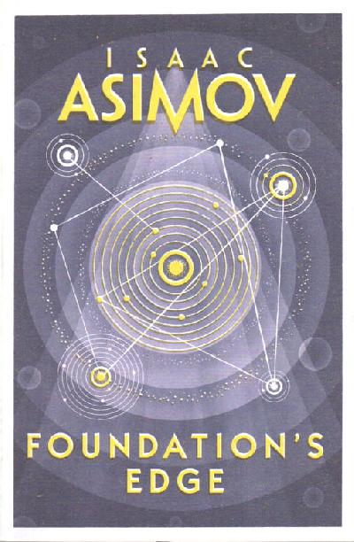

6 - Foundation's Edge (1982)
Synopsis
At last, the costly and bitter war between the two Foundations had come to an end. The scientists of the First Foundation had proved victorious; and now they retum to Hari Seldon's long-established plan to build a new Empire that the Second Foundation is not destroyed after all-and that its still-defiant survivors are preparing their revenge. Now the two exiled citizens of the Foundation-a renegade Councilman and the doddering historian-set out in search of the mythical planet Earth. . .and proof that the Second Foundation still exists. Meanwhile someone-or something-outside of both Foundations sees to be orchestrating events to suit its own ominous purpose. Soon representatives of both the First and Second Foundations will find themselves racing toward a mysterious world called Gaia and a final shocking destiny at the very end of the universe!
Download PDF- Prologue
- 01 - Councilman
- 02 - Mayor
- 03 - Historian
- 04 - Space
- 05 - Speaker
- 06 - Earth
- 07 - Farmer
- 08 - Farmwoman
- 09 - Hyperspace
- 10 - Table
- 11 - Sayshell
- 12 - Agent
- 13 - University
- 14 - Forward!
- 15 - Gaia-S
- 16 - Convergence
- 17 - Gaia
- 18 - Collision
- 19 - Decision
- 20 - Conclusion
- Afterword by the Author